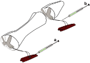

Introduction
Adeno-associated virus (AAV) is a single-stranded DNA parvovirus dependent on adenoviral coinfection for viral reproduction. At least 11 naturally occurring AAV serotypes have been described.1 The single-stranded DNA genome size of AAV is ~4.7 kb long.2 Host cell-mediated synthesis of the second DNA strand constitutes a rate-limiting step in the efficiency and onset of transgene expression following administration of single-stranded recombinant AAV vectors. This drawback can be resolved by generating self-complementary AAV (scAAV) vectors packaging a double-stranded genome at half the genome size of wild-type AAV.2,3,4 The scAAV vectors described herein were generated by deleting the terminal resolution site from one AAV terminal repeat, preventing the initiation of replication at the mutated end. The constructs generate single-stranded, inverted repeat genomes, with a wild-type terminal repeat at each end, and a mutated terminal repeat in the middle.3,4 After capsid disassembly, the genome folds through intramolecular base pairing within the mutant terminal repeat to form a double-stranded DNA molecule. These scAAV vectors, whose transgene capacity is half that of single-stranded AAV, are more efficient than single-stranded AAV in transducing various tissues including muscle, liver, and brain, and reach peak expression levels more rapidly than single-stranded AAV.2,4
Recombinant AAV is an effective vector for gene delivery in the central nervous system (CNS): the virus can infect postmitotic neurons, and results in sustained transgene expression with little immunogenicity or toxicity. The utility of AAV has been demonstrated in numerous preclinical studies, and is currently used in clinical trials for Alzheimer's disease, Parkinson's disease, Canavan's disease and Batten's disease.5,6,7 While viral vector delivery via direct injection into the CNS is required for therapeutic gene delivery in a number of CNS disorders, minimally invasive delivery techniques via muscle and peripheral nerve injection could be employed in diseases affecting the spinal cord such as amyotrophic lateral sclerosis, spinal cord injury, and spinal muscular atrophy, among others. Studies have demonstrated that, like adenovirus and rabies virus, AAV can infect lower motor neurons (MNs) either via uptake at or near the neuromuscular junction, or after injection into the sciatic nerve, followed by retrograde transport and transgene expression.8,9 Intraneural colchicine delivery disrupts microtubule polymerization and blocks retrograde infection by adenovirus and AAV.10
The various serotypes of AAV capsids differ in structure and bind unique membrane-associated receptors, resulting in differences in cell tropism and virus spread among the serotypes.1,11,12,13,14,15,16,17,18,19,20,21 Variability among serotypes in viral tropism for myotubes, e.g., has previously been shown to result in 100- to 1,000-fold differences in gene expression levels following infection.17,18 Previous studies have also demonstrated increases in virus spread and cell-type tropism (neurons versus glia) with AAV serotypes 1 and 5 when compared to AAV2.11,16,22 However, the retrograde transport efficacy of the different serotypes to the CNS following peripheral administration has not been quantitatively investigated to date.
We hypothesized that the unique tropisms of the various AAV capsids affect the efficiency of AAV retrograde infection from peripherally projecting MNs. Here we examined the capacity for retrograde infection of scAAV serotypes 1 through 6 both at the neuromuscular junction and along the length of the motor axon (Figure 1). The tested serotypes differed by capsid only, whereas the genomes in all vectors contained terminal repeats derived from AAV2. Of the serotypes tested, scAAV serotype 1 (scAAV1) resulted in the highest level of retrograde infection of lower MNs following intramuscular or intranerve injection. Further, comparison of single-stranded AAV1 to scAAV1 demonstrated higher expression levels following retrograde transport with the latter.
Figure 1.
Schematic representation of two distinct peripheral viral injections. (a) Injection of the extensor carpi muscle results in the expression of self-complementary adeno-associated virus (scAAV)-derived enhanced green fluorescent protein (eGFP) in the motor neurons of the cervical spinal cord. (b) Injection of the sciatic nerve results in scAAV-derived eGFP expression in motor neurons of the lumbar spinal cord.
Full figure and legend (16K)Results
Serotype 1 exhibits the greatest efficiency of retrograde transport after intramuscular injection
The efficiency of scAAV retrograde transport to the lower MNs was assessed by immunocytochemistry following intramuscular injection to the forelimb extensor carpi muscle. Injections of scAAV1 resulted in the highest number of GFP immunoreactive MNs in the cervical spinal cord among all serotypes tested (Figure 2a and b). scAAV1 resulted in infection of 4.1 ± 0.3% of cholera toxin B (CTB) labeled extensor carpi projecting MNs, an amount significantly higher than serotypes 2–6 (Figure 2c, P < 0.02). The transduction efficiency of all other serotypes was considerably lower, ranging from below detection levels (threshold of 0.43%) up to 0.87 ± 0.66% (Figure 2c). The ratio of GFP expressing cells to CTB-labeled cells counted in every seventh section was multiplied by the projected total of CTB labeled MNs determined by stereological counts, yielding an estimated total of 121 ± 33 scAAV1-GFP infected neurons per animal projecting to the single, small extensor carpi muscle. All cells expressing GFP in the ventral spinal cord were immunopositive for choline acetyltransferase, a marker of cholinergic lower MNs, indicating that vector expression was limited to the targeted neuronal population (Figure 3). Intramuscular injections of scAAV1 resulted in GFP expression with viral titers that was tenfold lower than that previously demonstrated as being required for retrograde transport with AAV2.8
Figure 2.
Green fluorescent protein (GFP) immunoreactive, retrogradely infected, cervical, lower motor neurons (MNs) following intramuscular injection. (a, b) GFP-immunoreactive lower MNs in a horizontal cervical spinal cord section following retrograde transport with scAAV1-eGFP injection to the right forelimb extensor carpi muscle. (a) Overall view of right cervical enlargement (scale bar = 500 μm). (b) Higher magnification of boxed area in (a) showing dendritic arborization of GFP-immunoreactive lower MNs (scale bar = 50 μm). (c) The proportion of GFP-immunoreactive MNs relative to the number of cholera toxin B (CTB)-labeled MNs quantified in every seventh section. (d), The total number of GFP immunoreactive MNs as estimated by comparison to stereological counts of CTB-labeled neurons projecting to extensor carpi muscle. scAAV1 demonstrates a significantly higher efficiency of retrograde infection than other serotypes. *P < 0.02, error bars = mean + SEM (n = 3/group).
Full figure and legend (124K)Figure 3.
Cholinergic lower motor neurons (MNs) express green fluorescent protein (GFP) when retrogradely infected with self-complementary adeno-associated virus 1. Double-labeled lumbar spinal cord sections demonstrating GFP expression in choline acetyltransferase (ChAT) immunoreactive MNs (arrows, scale bar = 100 μm).
Full figure and legend (45K)Serotype 1 exhibits the greatest efficiency of retrograde transport following intranerve injection
Sciatic injection of scAAV serotypes was used to assess retrograde transport to the lower MNs following intranerve administration (Figure 4). As with intramuscular injection, scAAV1 demonstrated the highest efficiency of retrograde transport among all the serotypes tested (Figure 4e, P < 0.003). Of the lower MNs projecting through the sciatic nerve, 7.5 ± 3.1% were retrogradely infected with scAAV1-eGFP, when measured as a proportion of CTB-labeled MNs. The transduction efficiency of all other serotypes was significantly lower, ranging from 0.32 ± 0.04% up to 1.07 ± 0.21%. The ratio of GFP expressing cells to CTB-labeled cells counted in every sixth section was multiplied by the estimated total of CTB-labeled MNs determined by stereological counts, to yield a total of 397 ± 166 scAAV1-GFP infected neurons per animal (Figure 4f).
Figure 4.
Lower motor neurons (MNs) retrogradely infected with self-complementary adeno-associated virus (scAAV). Green fluorescent protein (GFP) immunoreactive lower MNs in a horizontal lumbar spinal cord section following retrograde infection. Motor neurons of the lumbar enlargement infected with either (a) scAAV1-eGFP or (b) scAAV2-eGFP following injection in to the sciatic nerve (scale bar = 100 μm). (c, d)Higher magnification images of the areas indicated by boxes in a and b, respectively. Injection of scAAV1 clearly results in superior retrograde infection of spinal MNs. (e) The proportion of GFP-immunoreactive MNs relative to the number of cholera toxin B (CTB) labeled MNs quantified in every sixth section. (f) The total number of GFP-immunoreactive MNs as estimated by comparison to stereological counts of CTB-labeled neurons projecting through the sciatic nerve. scAAV1 demonstrates a significantly higher efficiency of retrograde infection than other serotypes. * P < 0.005; error bars = mean + SEM (scAAV1 n = 5, scAAV2 n = 5, scAAV3 ,n = 4, scAAV4 n = 3, scAAV5 , n = 5, scAAV6 n = 3).
Full figure and legend (195K)scAAV1 infection results in greater gene expression than single-stranded AAV1 after intranerve injection
Having discovered that scAAV1 exhibits the greatest efficiency of retrograde transport to MNs of the spinal cord among the self-complementary serotypes tested, we sought to compare the efficiency of expression of scAAV1 compared to single-stranded AAV1. Sciatic injection of 2.10 × 108 viral particles of single-stranded AAV1, the titer used to identify retrograde transport of scAAV1, was insufficient for the detection of GFP expression in the lumbar spinal cord enlargement (Figure 5a and b). A higher titer of 2.00 × 109 viral particles of single-stranded AAV1 was necessary to detect GFP expression in 0.91 ± 0.24% of lower MNs, but this titer resulted in the infection of a significantly lower number of MNs than the 7.5 ± 3.1% observed following injection of scAAV1 at a titer of 2.10 × 108 viral particles (Figure 5a, P < 0.012). The ratio of GFP expressing cells to CTB-labeled cells counted in every sixth section was multiplied by the estimated total of CTB-labeled MNs determined by stereological counts, to yield a total of 49 ± 13 single-stranded AAV1-GFP infected neurons per animal (Figure 5b).
Figure 5.
Green fluorescent protein (GFP) immunoreactive, retrogradely infected lower motor neurons (MNs) following sciatic injection of adeno-associated virus 1 (AAV1)-GFP (2.10 × 108 or 2.00 × 109 viral particles, VP) or self-complementary AAV1 (scAAV1)-GFP (2.10 × 108 VP). (a) The proportion of GFP-immunoreactive MNs relative to the number of cholera toxin B (CTB) labeled MNs quantified in every sixth section. (b) The total number of GFP-immunoreactive MNs as estimated by comparison to stereological counts of CTB labeled neurons projecting through the sciatic nerve. (c) Polymerase chain reaction detection of GFP DNA isolated from the ventral horn of the lumbar enlargement in animals following sciatic injection of single-stranded AAV1-GFP (2.10 × 108 or 2.00 × 109 VP) or scAAV1-GFP (2.10 × 108 VP). While AAV1 and scAAV1 are both retrogradely transported to the MN somata, scAAV1 demonstrates a significantly higher level of expression than AAV1 at identical and nearly tenfold lower titers. *P < 0.012.
Full figure and legend (25K)Confirmation of expression by polymerase chain reaction
Polymerase chain reaction (PCR) amplification of DNA isolated from the ventral gray of the lumbar spinal cord demonstrated the retrograde transport of the AAV-GFP genome in animals injected in the sciatic nerve with 2.00 × 109 viral particles of single-stranded AAV1-GFP and in animals injected with 2.10 × 108 viral particles of either single-stranded or scAAV1-GFP (Figure 5c).
Discussion
While peripheral injections of AAV2 have been shown to infect lower MNs by retrograde vector transport, this is a low efficiency phenomenon.8,9 Here we demonstrate that scAAV 1 exhibits significantly greater retrograde transduction efficiency than scAAV2, using 10–100-fold lower viral titers than those utilized in earlier studies of single-stranded AAV2.8,9 GFP expression was undetectable in MNs of the spinal cord following intramuscular injection of 1.05 × 109 viral particles of scAAV2, in agreement with earlier studies utilizing immunohistochemistry and PCR to analyze retrograde transport of AAV2.8 By contrast, an identical titer of scAAV1 was capable of transducing 4.2 ± 1.1% of the MNs projecting to the injected extensor carpi muscle, corresponding to 121 ± 33 MNs per animal in the targeted spinal segment. This increase in retrograde transport efficiency with scAAV1 following intramuscular delivery represents a significant advance in non-invasive gene delivery to the spinal cord.
Intranerve injection of scAAV1 resulted in infection of 397 ± 166 MNs per animal, or 7.5 ± 3.1% of all MNs in the targeted segment. Thus, intranerve vector injection was approximately threefold more efficient than intramuscular injection. The increased number of GFP expressing cells following intranerve injection, compared to intramuscular injection, is probably due to the innervation of multiple targets by neurons projecting through the sciatic nerve, resulting in the exposure of vector particles to greater numbers of motor axons. It is also possible that intranerve injection prevents vector loss from binding to myotubes. The latter possibility appears less likely to account for the enhanced efficiency of intranerve AAV injections, however, because the efficiency of CTB transport was also threefold greater following intranerve injection rather than intramuscular injection, and CTB is not taken up by muscle.
In contrast to earlier studies utilizing a peripheral injection of single-stranded AAV2-GFP, single-stranded AAV1-GFP retrograde infection was detectable by PCR following injection of <1 × 109 viral particles.8 Injection of 2.1 × 108 viral particles of single-stranded AAV1-GFP into the sciatic nerve resulted in PCR detection of retrogradely transported AAV-GFP genome in the lumbar spinal cord; however there was no detectable transgene expression in the lower MNs. This is in marked contrast to the robust GFP expression level of scAAV1-GFP injected at an identical titer. Following injection of 2.0 × 109 viral particles of single-stranded AAV1, GFP expression was detected in an average of 49 ± 13 lower MNs per animal. This total number of infected MNs is eightfold fewer than the 397 ± 166 GFP-immunoreactive MNs that resulted from a sciatic injection of nearly tenfold fewer (2.10 × 108) viral particles of scAAV1. The difference between single-stranded and scAAV1-GFP expression is likely to be attributable to the rate-limiting step of second strand synthesis.
CTB labeling was used to determine the number of MNs projecting to the targeted injection region; CTB is retrogradely transported with extremely high efficiency, labeling 89 ± 3% of large-diameter MNs in the lumbar enlargement. Thus it could be reliably used to determine the proportion of neurons projecting through the nerve or to the muscle that were retrogradely infected with scAAV.
In addition to peripheral injection, central injections of AAV2 have been found to result in retrogradely infected neurons of the entorhinal cortex and substantia nigra following hippocampal and striatal injections, respectively.23 Later studies described a qualitative increase in this retrograde transport efficiency with recombinant AAV1 and AAV5 following injection to the rat hippocampus, although formal quantification was not performed.11 These earlier studies suggested that retrograde transport efficiencies of the various AAV serotypes in the nervous system may vary.
Peripheral administration of scAAV serotype 1 appears to represent a method of efficiently delivering therapeutic transgenes to the spinal cord. Motor neuron specific targeting for transgene delivery could potentially be utilized to treat diseases such as amyotrophic lateral sclerosis, hereditary spastic paraplegia and spinal muscular atrophy, and could also be used to stimulate targeted axonal growth toward MNs after spinal cord injury. Intraneural delivery of scAAV1 led to a greater infection and spread of vector in this study than intramuscular injection, and may therefore be a superior method for achieving broader therapeutic gene delivery into the spinal cord.
Materials and Methods
Viral stocks. All viral serotypes were produced at the Vector Core at the University of North Carolina, Chapel Hill. The viral plasmid utilized for scAAV (pHpa-Trs-SK) contains a human cytomegalovirus promoter, SV40 intron, enhanced GFP transgene, SV40 polyA signal along with one wild-type and one mutated AAV2 terminal repeat.3 The viral plasmid used to generate single-stranded AAV (pTRUFR-eGFP) contains a human cytomegalovirus promoter, SV40 intron, enhanced GFP transgene, SV40 polyA signal and wild-type AAV2 terminal repeats. pHpa-Trs-SK or pTRUFR-eGFP were co-transfected with adenovirus and AAV helper plasmids into HEK 293 cells via CaCl2 transfection and cell lysates were purified by CsCl density gradient purification as previously described.24,25 The self-complementary virus produced contained a double-stranded DNA genome with one mutated terminal repeat in the middle and two wild-type AAV2 terminal repeats at the end of the genome.4 The single-stranded virus produced contained a single-stranded DNA genome flanked by two wild-type AAV2 terminal repeats. Viral titers were determined by dot blot DNA hybridization and the virus was diluted in Hank's Balanced Saline Solution to 1.0 × 1012 or 1.05 × 1011 viral particles/ml prior to injection.
Forelimb injection of scAAV serotypes. All animal experiments were conducted in accordance with Society for Neuroscience and National Institutes of Health guidelines. Adult female Fischer 344 rats (150–165 g) were anesthetized with 2 ml/kg of anesthetic mixture: 25 mg/ml ketamine, 1.3 mg/ml xylazine and 0.25 mg/ml acepromazine. An incision was made between the elbow and wrist of the lower right forelimb to expose the extensor carpi muscle. 1.05 × 109 viral particles (10 μl) of scAAV cytomegalovirus-eGFP were injected 1 mm subfascially in three sites at the thickest point of the extensor carpi muscle of adult rats. Serotypes 1 through 6 were injected unilaterally to three animals each using a 10 μl Hamilton syringe with a beveled 26 ga injection needle (Hamilton Company, Reno, NV). Injections were made at a rate of 2 μl/min with the needle held in place for an additional 30 seconds after injection. The skin was then closed and stapled. An additional five rats were injected in the same manner with 10 μl of a 1% solution of the retrograde tracer CTB subunit (LIST Biological Laboratories, Campbell, CA). CTB is a robust retrograde tracer that was used to assess the number of lower MNs innervating the extensor carpi muscle. This number was used to determine the retrograde transport efficiency of scAAV serotypes following extensor carpi injection. At 4 weeks postinfection, or 1 week post-CTB labeling, rats were transcardially perfused with 4% paraformaldehyde. Spinal cords were postfixed in 4% paraformaldehyde overnight, then transferred to a 30% sucrose solution prior to cryostat sectioning of the cervical enlargement. Tissue was embedded in tissue freezing medium (Triangle Biomedical Services, Durham, NC) and sectioned horizontally on a Jung Frigocut (Leica, Bannockburn, IL) set at 35 μm intervals.
Sciatic injection of AAV serotypes. Adult female Fischer 344 rats (150–165 g) were anesthetized with 2 ml/kg of anesthetic mixture. An incision was made along the hindlimb, immediately caudal and parallel to the femur, and the sciatic nerve was exposed. 2.10 × 108 viral particles (2 μl) of scAAV cytomegalovirus-eGFP were injected into the sciatic nerve (1 μl per branch) along the length of the femur. scAAV1 (n = 5), scAAV2 (n = 5), scAAV3 (n = 4), scAAV4 (n = 3), scAAV5 (n = 5) or scAAV6 (n = 3) were injected using a 1 μl Hamilton syringe with beveled 22 ga injection needle (Hamilton Company, Reno, NV). Injections were made at a rate of 1 μl/min with the needle held in place for an additional 15 seconds following injection. Following injection, the skin was closed and stapled. Six rats were injected in the sciatic nerve with single-stranded recombinant AAV1, three with 2.10 × 108 (2 μl) viral particles and the other three with 2.00 × 109 (2 μl) viral particles. Three additional rats were injected in the same manner with 2 μl of a 1% CTB solution to estimate the number of lower MNs in the lumbar spinal cord with projections to the sciatic nerve. This number was used to calculate the retrograde transport efficiency of scAAV serotypes 1–6. Two weeks following virus injection, or 1 week following CTB injection, rats were transcardially perfused with 100 ml phosphate-buffered saline followed by 200 ml of 4% paraformaldehyde. Spinal cords were postfixed in 4% paraformaldehyde overnight then transferred to a 30% sucrose solution prior to cryostat sectioning of the lumbar enlargement. Horizontal sections were cut 35 μm thick.
Immunocytochemistry. Horizontal spinal cord sections at either the cervical or lumbar level were immunolabeled for either GFP or CTB. Sections blocked in tris-buffered saline + 0.25% Triton X-100 with 5% donkey serum were incubated either overnight at 4 °C with rabbit anti-GFP (1:6,000) (Millipore, Billerica, MA) or for 3 days at 4 °C with goat anti-CTB (1:80,000) (LIST Biological Laboratories, Campbell, CA). 3,3′-diaminobenzidine precipitation following biotinylated secondary antibody incubation was used to visualize retrogradely infected lower MNs. CTB-labeled sections were thionin counterstained. Two-channel immunofluorescence for GFP and choline acetyltransferase was performed by incubating in rabbit anti-GFP (1:1,500) (Millipore) and goat anti–choline acetyltransferase (1:100) (Millipore) overnight at 4 °C followed by incubation with donkey anti-rabbit conjugated to Alexa 488 (1:250) (Invitrogen, Carlsbad, CA) and donkey anti-goat conjugated to Alexa 594 (1:250) (Invitrogen) for 2.5 hours at room temperature.
Quantification and analysis. The total number of neurons in the spinal cord that were labeled for either GFP or CTB were quantified in one-of-seven serial sections in animals injected into the extensor carpi muscle, and in one-of-six sections in animals injected into the sciatic nerve. CTB labeling was used to delineate the rostrocaudal extent of MNs projecting either to the extensor carpi muscle or through the sciatic nerve, and stereological counts of MNs were made using Stereo Investigator software (MicroBrightField, Williston, VT) to estimate the total number of CTB-labeled MNs. CTB-labeled cells and Nissl stained cells in the ventral horn with diameters greater than 20 μm were counted and Stereo Investigator was used to determine the projected total number of CTB and non-CTB labeled large-diameter MNs in the spinal cord. Large-diameter MN nucleoli were counted in random fields of view throughout the extent of the ventral horn (sampling fraction 50%). The top and bottom 12.5% of the sections were omitted to prevent potential double-counting of neurons in adjacent sections. The total number of GFP-immunoreactive cells was measured as a percentage of the total number of CTB-labeled cells counted per injection paradigm. Non-parametric statistical comparison was made with the Kruskal–Wallis rank sum test.
DNA isolation and PCR. For DNA isolation, 16 animals were injected unilaterally with either phosphate-buffered saline (n = 4), 2.10 × 108 viral particles of scAAV1 (n = 4), 2.10 × 108 viral particles of single-stranded AAV1 (n = 4) or 2.10 × 108 viral particles of single-stranded AAV1 (n = 4). Two weeks post injection, the ventral gray matter of the lumbar enlargement on the injected side was dissected and DNA was isolated using Qiagen's DNeasy Blood and Tissue DNA isolation kit (Qiagen, Valencia, CA). PCR was performed on 750 ng DNA from each sample with Pfx50 polymerase (Invitrogen): 40 cycles of 15 seconds denaturation at 94 °C, 30 seconds annealing at 50 °C and 30 seconds extension at 68 °C with an initial denaturation for 5 minutes at 94 °C and a final extension for 10 minutes at 68 °C. The primers used were TGGAGTACAACTACAACAGCCA and CACCTTGATGCCGTTCTTC (Allele Biotechnology, San Diego, CA).
References
REFERENCES
- Choi, VW, McCarty, DM andSamulski, RJ (2005). AAV hybrid serotypes: improved vectors for gene delivery. Curr Gene Ther 5: 299–310. | Article | PubMed | ISI | ChemPort |
- McCarty, DM, Monahan, PE andSamulski, RJ (2001). Self-complementary recombinant adeno-associated virus (scAAV) vectors promote efficient transduction independently of DNA synthesis. Gene Ther 8: 1248–1254. | Article | PubMed | ISI | ChemPort |
- Fu, H, Muenzer, J, Samulski, RJ, Breese, G, Sifford, J, Zeng, X et al.(2003). Self-complementary adeno-associated virus serotype 2 vector: global distribution and broad dispersion of AAV-mediated transgene expression in mouse brain. Mol Ther 8: 911–917. | Article | PubMed | ISI | ChemPort |
- McCarty, DM, Fu, H, Monahan, PE, Toulson, CE, Naik, P andSamulski, RJ (2003). Adeno-associated virus terminal repeat (TR) mutant generates self-complementary vectors to overcome the rate-limiting step to transduction in vivo. Gene Ther10: 2112–2118. | Article | PubMed | ChemPort |
- McPhee, SW, Janson, CG, Li, C, Samulski, RJ, Camp, AS, Francis, J et al.(2006). Immune responses to AAV in a phase I study for Canavan disease.J Gene Med 8: 577–588. | Article | PubMed | ISI | ChemPort |
- Warrington, KH Jr andHerzog, RW (2006). Treatment of human disease by adeno-associated viral gene transfer.Hum Genet 119:571–603. | Article | PubMed | ISI | ChemPort |
- Mandel, RJ and Burge, C (2004). Clinical trials in neurological disorders using AAV vectors: promises and challenges.Curr Opin Mol Ther 6: 482–490. | PubMed | ISI | ChemPort |
- Kaspar, BK, Llado, J, Sherkat, N, Rothstein, JD andGage, FH (2003). Retrograde viral delivery of IGF-1 prolongs survival in a mouse ALS model.Science 301: 839–842. | Article | PubMed | ISI | ChemPort |
- Pirozzi, M, Quattrini, A, Andolfi, G, Dina, G, Malaguti, MC, Auricchio, A et al.(2006). Intramuscular viral delivery of paraplegin rescues peripheral axonopathy in a model of hereditary spastic paraplegia.J Clin Invest 116: 202–208. | Article | PubMed | ISI | ChemPort |
- Boulis, NM, Willmarth, NE, Song, DK, Feldman, EL andImperiale, MJ (2003). Intraneural colchicine inhibition of adenoviral and adeno-associated viral vector remote spinal cord gene delivery. Neurosurgery 52: 381–387; discussion 387. | Article | PubMed |
- Burger, C, Gorbatyuk, OS, Velardo, MJ, Peden, CS, Williams, P, Zolotukhin, S et al.(2004). Recombinant AAV viral vectors pseudotyped with viral capsids from serotypes 1, 2,and 5 display differential efficiency and cell tropism after delivery to different regions of the central nervous system. Mol Ther 10: 302–317. | Article | PubMed | ISI | ChemPort |
- Halbert, CL, Allen, JM andMiller, AD (2001). Adeno-associated virus type 6 (AAV6) vectors mediate efficient transduction of airway epithelial cells in mouse lungs compared to that of AAV2 vectors. J Virol 75: 6615–6624. | Article | PubMed | ISI | ChemPort |
- Zabner, J, Seiler, M, Walters, R, Kotin, RM, Fulgeras, W, Davidson, BL et al.(2000). Adeno-associated virus type 5 (AAV5) but not AAV2 binds to the apical surfaces of airway epithelia and facilitates gene transfer. J Virol 74: 3852–3858. | Article | PubMed | ISI | ChemPort |
- Auricchio, A, O'Connor, E, Weiner, D, Gao, G-P, Hildinger, M, Wang, L et al.(2002). Noninvasive gene transfer to the lung for systemic delivery of therapeutic proteins. J Clin Invest 110: 499–504. | Article | PubMed | ISI | ChemPort |
- Virella-Lowell, I, Zusman, B, Foust, K, Loiler, S, Conlon, T, Song, S et al.(2005). Enhancing rAAV vector expression in the lung. J Gene Med 7: 842–850. | Article | PubMed | ISI | ChemPort |
- Wang, C, Wang, C-M, Clark, KR andSferra, TJ (2003). Recombinant AAV serotype 1 transduction efficiency and tropism in the murine brain. Gene Ther 10: 1528–1534. | Article | PubMed | ChemPort |
- Chao, H, Liu, Y, Rabinowitz, J, Li, C, Samulski, RJ andWalsh, CE (2000). Several log increase in therapeutic transgene delivery by distinct adeno-associated viral serotype vectors. Mol Ther 2: 619–623. | Article | PubMed | ISI | ChemPort |
- Hauck, B andXiao, W (2003). Characterization of tissue tropism determinants of adeno-associated virus type 1. J Virol 77: 2768–2774. | Article | PubMed | ISI | ChemPort |
- Palomeque, J, Chemaly, ER, Colosi, P, Wellman, JA, Zhou, S, del Monte, F et al.(2007). Efficiency of eight different AAV serotypes in transducing rat myocardiumin vivo. Gene Ther 14: 989–997. | Article | PubMed | ChemPort |
- Taymans, J-M, Vandenberghe, LH, Haute, CVD, Thiry, I, Deroose, CM, Mortelmans, L et al.(2007). Comparative analysis of adeno-associated viral vector serotypes 1, 2, 5, 7 and 8 in mouse brain. Hum Gene Ther 18: 195–206. | Article | PubMed | ISI | ChemPort |
- Hacker, UT, Wingenfeld, L, Kofler, DM, Schuhmann, NK, Lutz, S, Herold, T et al.(2005). Adeno-associated virus serotypes 1 to 5 mediated tumor cell directed gene transfer and improvement of transduction efficiency. J Gene Med 7: 1429–1438. | Article | PubMed | ISI | ChemPort |
- Shevtsova, Z, Malik, JMI, Michel, U, Bahr, M andKugler, S (2005). Promoters and serotypes: targeting of adeno-associated virus vectors for gene transfer in the rat central nervous system, in vitro and in vivo. Exp Physiol 90: 53–59. | Article | PubMed | ISI | ChemPort |
- Kaspar, BK, Erickson, D, Schaffer, D, Hinh, L, Gage, FH andPeterson DA (2002). Targeted retrograde gene delivery for neuronal protection. Mol Ther 5: 50–56. | Article | PubMed | ISI | ChemPort |
- Xiao, X, Li, J andSamulski, RJ (1998). Production of high-titer recombinant adeno-associated virus vectors in the absence of helper adenovirus. J Virol 72: 2224–2232. | PubMed | ISI | ChemPort |
- Li, J, Samulski, RJ andXiao, X (1997). Role for highly regulated rep gene expression in adeno-associated virus vector production. J Virol 71: 5236–5243. | PubMed | ISI | ChemPort |
Acknowledgments
The authors would like to acknowledge Aravind Asokan's assistance with manuscript preparation. Supported by National Institutes of Health (NIH) (R01 NS09881, NS42291), NIH/NIGMS Genetics Training Program (T32 GM08666), ALS #1306, PO1HL 6697, the Veterans Administration, and the Adelson Program in Neural Rehabilitation and Repair.
MORE ARTICLES LIKE THIS
These links to content published by NPG are automatically generated.
REVIEWS
Self-complementary AAV Vectors; Advances and ApplicationsMolecular Therapy Review
See all 12 matches for ReviewsRESEARCH
Transient Demyelination Increases the Efficiency of Retrograde AAV TransductionMolecular Therapy Original Article
Intravenous Administration of Self-complementary AAV9 Enables Transgene Delivery to Adult Motor NeuronsMolecular Therapy Original Article
Efficient transduction of non-human primate motor neurons after intramuscular delivery of recombinant AAV serotype 6Gene Therapy Scientific Correspondence
Recombinant Adeno-associated Viral Vectors as Therapeutic Agents to Treat Neurological DisordersMolecular Therapy Research Article
See all 60 matches for Research